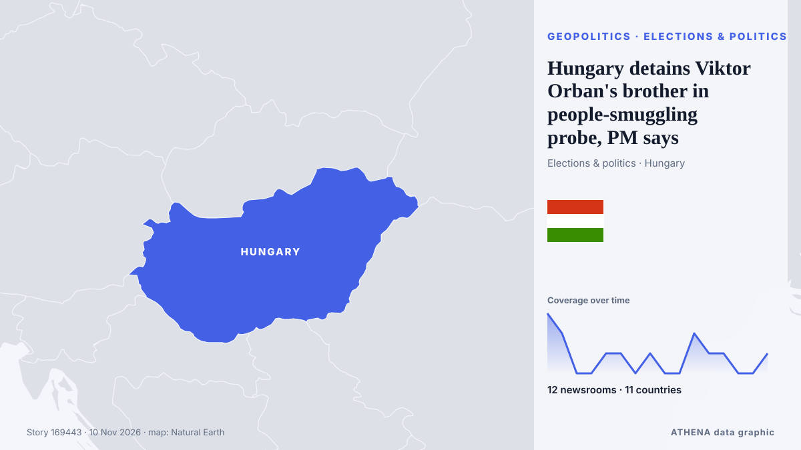

Géopolitique, politique et sécurité
SponsoriséPrésenté par  Cybernetics and Artificial Intelligence Lab Welcome to the Cybernetics and Artificial Intelligence Laboratory, established at the Department of Business Administration of the National and Kapodistrian University of Athens. The lab is headed by Professor Dimitrios Thomakos. The lab aims to do research that can be published in top venues. Our research uses tools and methods of Artificial Intelligence, and lies in the following areas: - Forecasting - Decision making - Cyber security - Finance We are always looking forward to collaborating with exceptional students!
Cybernetics and Artificial Intelligence Lab Welcome to the Cybernetics and Artificial Intelligence Laboratory, established at the Department of Business Administration of the National and Kapodistrian University of Athens. The lab is headed by Professor Dimitrios Thomakos. The lab aims to do research that can be published in top venues. Our research uses tools and methods of Artificial Intelligence, and lies in the following areas: - Forecasting - Decision making - Cyber security - Finance We are always looking forward to collaborating with exceptional students!
Les titres sont affichés en anglais, tels que publiés.

Élections et politiqueHungary detains Viktor Orban's brother in people-smuggling probe, PM says
Writing on Facebook, Viktor Orban dismissed his brother's detention as an instance of political revenge, writing that "I am the target, my younger brother is just a tool." de The Jerusalem Post
| 28 oct. | 236 |
|---|---|
| 29 oct. | 245 |
| 30 oct. | 287 |
| 31 oct. | 154 |
| 1 nov. | 212 |
| 2 nov. | 316 |
| 3 nov. | 352 |
| 4 nov. | 396 |
| 5 nov. | 328 |
| 6 nov. | 227 |
| 7 nov. | 210 |
| 8 nov. | 199 |
| 9 nov. | 262 |
| 10 nov. | 96 |
Russia and Ukraine hold first peace talks for nine months, gaps have narrowed
ABU DHABI: Russian and Ukrainian officials met in Abu Dhabi on Tuesday for their first US-brokered talks since February, after President Donald Trump suggested last week that a broad deal was… de New Straits Times
Trilateral talks between Russia, Ukraine and US begin in Abu Dhabi
Rustem Umierov said Ukraine's team is en route to Abu Dhabi for trilateral talks on 10-11 November, with European and NATO representatives also attending. de Ukrainska Pravda (English)
Trump says FBI investigating Nvidia boss's affair with alleged Chinese spy
US President Donald Trump has said the FBI is investigating the affair between the chief executive of Nvidia and an alleged Chinese spy. de MyJoyOnline
Saudi-led coalition says it intercepted Houthi missile
Saudi-led coalition claims Houthi missile destroyed over Eastern Province The Saudi-led coalition air defences intercepted and destroyed a ballistic missile launched by the Houthis toward the… de Middle East Eye
UFC chief Dana White declines Trump’s ‘jovial’ White House job offer
President Trump said he offered the job of White House press secretary to Dana White, president and CEO of the Ultimate Fighting Championship (UFC). de The Hill
Trump questions midterm elections integrity after previously accepting results
A Democratic victory in Congress could reshape Washington’s approach to Africa, putting Trump’s deportation deals, visa restrictions and minerals partnerships under fresh scrutiny. de The Africa Report
Germany calls for more talks with Iran during G7 Paris meeting
National Security Adviser Wi Sung-lac said Friday that Seoul expects to make progress on the transfer of wartime operational control (OPCON) at defense talks with Washington early next year. de The Korea Times
Hasina seeks new passport in clearest sign of Bangladesh return
The request marks the clearest step by Hasina to act on her plan to return to Bangladesh in December. de Express Tribune
Trump: Iran war effectively over
Shafaq News- Washington (Updated at 1:30 a.m.) The war with Iran is effectively over from a military standpoint, US President Donald Trump said on Monday after meeting Qatari Prime Minister Sheikh… de Shafaq News (English)
Azerbaijan expresses condolences to Poland over deadly shooting in Krakow
The Azerbaijani Foreign Ministry has expressed condolences following a shooting in the Polish city of Krakow that resulted in fatalities and numerous injuries. de AzerNews
Trump thinks he will meet Xi and Putin at China APEC summit
Trump said he will travel to China for the APEC summit, set for Nov 18 to Nov 19. de The Straits Times
Four Killed in Gaza after Sand Embankment Collapses on to Tents
Torrential rain in Gaza caused a sand embankment to collapse on to tents, killing a woman and three small children in an incident that highlighted the danger facing hundreds of thousands of displaced… de Cyprus Mail
Riyadh financial district targeted, Aramco skyscraper damaged
An Aramco building in Riyadh was targeted in an "attempted attack", the Saudi energy ministry said on Sunday, with eyewitnesses telling AFP the skyscraper sustained damage, after the Saudi-led… de Al-Monitor
Trump says he is highly unlikely to order Iran strikes if talks progress
WASHINGTON/CAIRO, Nov 8 (Reuters) - US PresidentDonald Trump on Sunday said he was highly unlikely to order fresh attacks on Iran as long as talks to end the conflict progress, even as both countries… de Al-Monitor
G7 ministers press Rubio on Iran, Ukraine at Paris talks
Trump stoked fears of a U.S. pivot toward the Kremlin by predicting a "very big" deal with Russia involving not only Ukraine but "all of Europe." de Courthouse News
Democratic leader Hakeem Jeffries announces bid for US House speaker
'I write to humbly request your support in connection with my candidacy to serve as the next Speaker of the House of Representatives,' says Jeffries in letter. de Anadolu Agency (English)
Trump admits US deportation policy may have been too tough
WASHINGTON: US President Donald Trump said that his mass deportation of undocumented immigrants was “too tough,” according to an excerpt of an interview with CBS aired Sunday. de New Straits Times
Europeans to join Ukraine peace talks in Abu Dhabi: Berlin
Lavrov says Abu Dhabi talks will address principles for a Russia-Ukraine peace deal, as top advisers from Germany, France and the UK attend to represent Ukrainian and European security interests. de TRT World
Merz nominates Ilse Aigner as Germany's president
German Chancellor Friedrich Merz formally nominated Bavarian State Parliament's President Ilse Aigner as the country's next president, paving the way for her to become Germany's first female… de AzerNews
Hardline Trump aide Stephen Miller takes over as White House chief of staff
The architect of the Trump administration’s brutal crackdowns on immigration and dissent was already known as “the prime minister.” Now he’ll work as the chief of staff. de Wired
Italy blames pro-Russian hackers for leaking Tajani’s personal data
Italy’s prime minister, Giorgia Meloni, has blamed pro-Russian hackers for posting the foreign minister’s personal data on the dark web. de The Next Web
Ukraine Peace Talks Set for Abu Dhabi
The United States will bring together delegations from Ukraine and Russia in Abu Dhabi on November 10-11 to discuss ending Russia's conflict with Ukraine, post-conflict security agreements and… de CGTN (World)
Israel’s president picks Netanyahu rival Gadi Eisenkot to form government
The deadlocked election had left neither Prime Minister Benjamin Netanyahu nor his strongest rival, Gadi Eisenkot, with a clear path to power. de The Independent
US Offers Up to $20 Million Reward for Information on Iran’s Nuclear Program
WASHINGTON, Nov 7: The United States has announced a reward of up to $20 million, along with possible relocation, for information about Iran’s nuclear program, including its facili... de Arab Times
Explosions heard on Iran's Qeshm Island, state media reports
TEHRAN, Nov 3: Several explosions were heard from the direction of the sea near Iran's southern port city of Bandar Lengeh on Monday, according to the IRGC-affiliated Fars news age... de Arab Times
Europe will be represented at US-mediated Ukraine talks in Abu Dhabi: France
France has announced that Europe will be represented at US-mediated talks in Abu Dhabi with Russia and Ukraine. de Arab News
US strikes on Iran's Qeshm Island cause no damage to vital infrastructure: Official
Hormozgan deputy governor says targeted sites were outside residential, commercial areas, with emergency services on high alert. de Anadolu Agency (English)
Poland calls Krakow shooting rampage 'terrorist' attack
Shooter, 25, remains in ‘very critical condition’ in hospital after shootout with police. de The Independent
US launches task force to disrupt land transit routes into Iran
US Central Command chief Brad Cooper said the task force would further limit Iran's ability to fund terrorism, rebuild weapons factories and replenish its military. de Free Malaysia Today
Russian strikes cut power to hundreds of thousands in Ukraine
Ukraine is bracing for a new harsh winter of war as Russia ramps up daily aerial barrages, raining down drones and missiles on the power network. de Free Malaysia Today
Israeli President Herzog tasks Gadi Eisenkot with forming new government
The president's decision comes after 67 lawmakers endorsed Eisenkot in a round of consultations held with party representatives after the October 27 election, compared with just 46 who endorsed… de Haaretz (English)
Iran suggests blasts are not US attacks as both sides report ships hit
CAIRO, Nov 8 (Reuters) - Iranian media suggested explosions in southern Iran on Saturday evening were related to Iranian military activities rather than US strikes while both sides reported that… de Al-Monitor